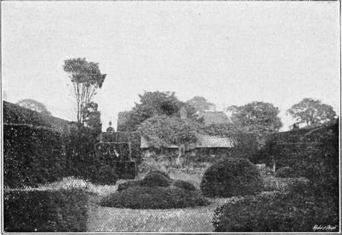

Chapter XIII. Nineteenth Century
Description
This section is from the book "A History Of Gardening In England", by Alicia Amherst. Also available from Amazon: A History Of Gardening In England.
Chapter XIII. Nineteenth Century
" Hence through the garden I was drawn, A realm of pleasance, many a mound, And many a shadow-chequered lawn, Full of the city's stilly sound ; And deep myrrh thickets blowing round The stately cedar, tamarisks, Thick rosaries of scented thorn, Tall orient shrubs and obelisks, Graven with emblems of the time".
Lord Tennyson.
THE progress of gardening during the last hundred years has been so great and so rapid, that it would be a well-nigh endless task to take even a very cursory review of it in all its branches. The immense advance in Botany and classification, the improved methods of cultivation, the vast hot-houses and stoves, and the countless treasures from tropical climes with which to stock them, the numberless plants collected from all parts of the world to beautify the flower-garden, and the endless florists' varieties improved and added to year by year, all these have combined to make the garden of the nineteenth century what it is. Much as we may praise the gardens of our forefathers, and we have seen how much there was to admire or imitate in them, it is difficult to imagine our gardens deprived of the many floral treasures which have been added to them of late years. Many flowers have become so familiar, that it is hard to picture a garden without them, yet numbers of plants now to be seen almost everywhere had not been brought to our shores one hundred years ago. To bring about such changes many men have been at work, in every department, each contributing something towards the progress of gardening. There have been practical gardeners and nurserymen, great botanists and men of knowledge and daring, whose lives have been risked in the cause of science, and to whose courage and perseverance we owe so many of the treasures of a modern garden.
While the rage for landscape-gardening was at its height, there were many practical gardeners busy in a quiet way carrying on the work of horticulture. One of these was Abercrombie, whose writings were popular for many years. He was the son of a market gardener near Edinburgh, and was born in the year 1726. The Battle of Preston Pans was fought close to his father's garden wall, and he was present at the time. His first place as gardener was with Sir James Douglas, and later on he married a rich girl, a relative of his former employer. In 1770 he settled with his family, consisting of two sons and sixteen daughters, between Mile End and Hackney, and there started a nursery garden. His first book, Every Man his own Gardener, came out in 1767, and he was so afraid of failure that he paid Mawe, gardener to the Duke of Leeds, the sum of £20 to allow his name also to appear on the title-page. Hence the book has become known as the work of Mawe and Abercrombie, although the latter wrote it entirely. His other writings, Amateur Gardening, The Gardener's Daily Assistant, and such like, were equally popular. Another book of this date, by Wm. Hanbury, also gives full directions for the cultivation of a great number of trees, shrubs, perennial and annual hardy flowers, and greenhouse and stove plants.* Among those mentioned in these books we find many things which had just been introduced, such as the Pontic Rhododendron, Azalea nudiflora, or " American upright honeysuckle," as Hanbury calls it ; Andromeda polifolia, varieties of Allspice (Calycanthus) of Sumach (Rhus) and of Magnolia (grandiflora and others), the snowdrop tree (Halesia), Hydrangias, and Spireas, and other hardy plants. There were also many additions to the half hardy and stove plants. Crinum capense or " lily Asphodel," and the more tender Belladonna lily (Amaryllis Belladonna). The Scarborough lily (Vallota purpurea) appeared about this time ; the same kind of story being told of its origin as of that of the Guernsey lily (Nerine samiensis), which was said to have grown in Guernsey from bulbs washed ashore from a wreck of a ship from Japan about 1659. The camellia or "Japanese rose" (Camellia japonica), was grown by the middle of the eighteenth century. The " gardenia, or the Cape Jasmine " (Gardenia florida), Plumbago (rosea) and other " tender sorts of leadwort," the Gloriosa superba, and Allamanda (Allamanda cathartica) were among the climbing plants which adorned the stove.
Arley, a garden laid out fifty years ago in the old formal style.
Some families of plants were becoming so conspicuous as to have a special literature of their own. The geraniums and heaths were treated of by Andrews, the Mesembryanthemums by Haworth, and the Proteae by Knight. The literature of the orchard was also carried on by able hands. Speedily, gardener to the Duke of Portland, was the author of treatises on the pine and the vine. He describes fifty of the varieties of grapes grown at Welbeck, and mentions many of the fine vines to be seen then in England.* The Black Hamburgh at Valentine, in Essex, the parent of the Hampton Court one, yielded so much fruit that the gardener frequently made £100 a year by selling the bunches. A vine growing at Northallerton outside a house in 1789 covered 137 square yards of wall. He notices the vineyards near Bath, also those of Sir William Basset, in Somerset, who made some hogsheads of wine annually, and the Hon. Charles Hamilton, at Pain's Hill (the famous landscape garden), made wine from "Burgundy" and "black cluster" grapes, which sold for 7s 6d to 10s the bottle. Speechly himself grew a famous bunch of grapes at Welbeck, in 1781, which weighed 19 1/2 lbs., and measured 20 in. in diameter. It was sent by the Duke of Portland to the Marquess of Rockingham, carried by men, like the spies returning from the promised land. Early in this century a vine was brought from abroad and planted at Cannon Hall, Yorkshire, which has since produced the well-known variety bearing that name. Haynes wrote on the strawberry, gooseberry, and raspberry. The strawberry was being much improved, and new and large varieties produced by crossing the Virginian with the Chilian, a species introduced early in the eighteenth century. Old-fashioned gardens still retained the hautboy (F. elatior) now so rarely to be seen, having been entirely superseded by the finer American species.
* Complete Body of Planting and Gardening. By Wm. Hanbury, 1770. 2 vols, folio.
Continue to: